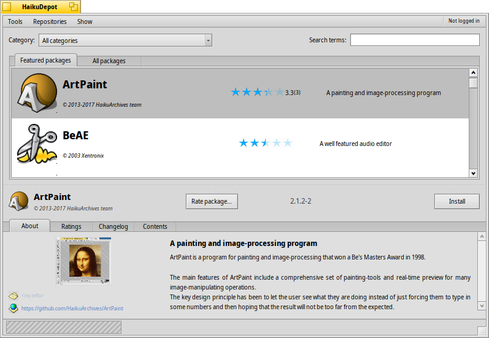
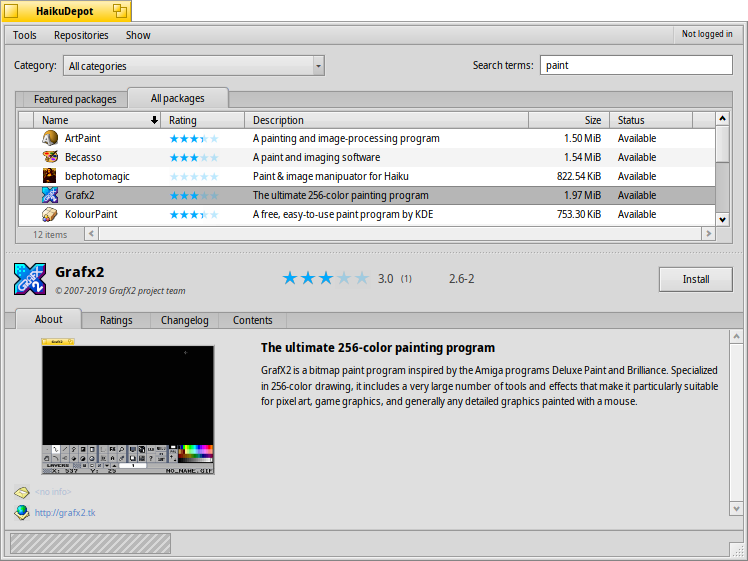
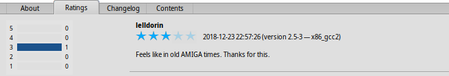
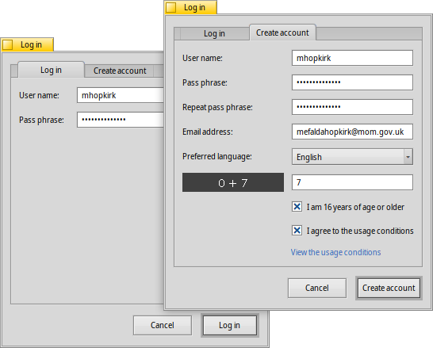
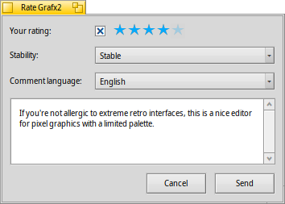

| Índice |
| Filtro Lista Área informativa Menús HaikuDepot y Mostrar Creación de una cuenta de usuario Valoración y comentarios Registros de diagnóstico Sugerencias |
HaikuDepot
| Barra de escritorio: | ||
| Ubicación: | /boot/system/apps/HaikuDepot | |
| Configuraciones: | ~/config/settings/HaikuDepot/main_settings ~/config/cache/HaikuDepot/ - descripciones, capturas de pantallas, íconos y demás, almacenados en memoria caché |
HaikuDepot es la aplicación principal para administrar los paquetes de software. Con ella puede navegar y buscar en los repositorios de paquetes e instalar, actualizar y desinstalar paquetes. De forma predeterminada, HaikuDepot inicia con una lista de "paquetes destacados", software considerado de interés para la mayoría de los usuarios.
La segunda pestaña muestra , que cambia la vista a una con íconos de menor tamaño y se muestra más información, organizada en columnas:
 Filtro
Filtro
En la parte superior se encuentran varias opciones para filtrar la lista de paquetes disponibles, que son:
El menú emergente le permite limitar la lista a categorias individuales como "Audio" o "Juegos".
El campo de texto de los filtra la lista a sólo esos paquetes que tienen todas los términos ingresados (separados por espacios) en su nombre o descripción.
El menú de la barra de menú determina cuales repositorios serán consultados. Los paquetes "locales" son aquellos que fueron instalados desde lugares diferentes a un repositorio en línea; tal vez desde una unidad USB o descargados de algún sitio web o un paquete que Ud. mismo creó.
Lista
Al igual que cualquier ventana de Tracker, puede elegir desde un menú contextual cuales columnas mostrar haciendo clic con el botón derecho en el encabezado de la columna. Un clic izquierdo ordenará la lista de acuerdo a esa columna. Desde luego, puede reordenar las columnas arrastrándolas a una nueva posición.
La columna muestra cuándo un paquete fue añadido o actualizado. Ordene por esta columna para ver en la parte superior de la lista qué hay de nuevo o qué se ha actualizado.
La columna de un paquete puede presentar uno de varios estados:
: El paquete está instalado actualmente y listo para ser usado.
: El paquete existe en ese repositorio y puede ser descargado e instalado. Si hay alguna dependencia en otros paquetes, será informado de ellos cuando se esté instalando y tendrá la opción de descargar/instalar todo lo que sea necesario.
: Pendiente aparece cuando un paquete está en cola para su descarga o instalación. Mientras un paquete se descarga, el progreso se muestra como porcentaje.
Puede agarrar la línea punteada entre la lista de paquetes y el área de información para cambiar el tamaño vertical de la lista de paquetes.
Área Informativa
En la parte inferior hay un área que muestra información sobre el paquete seleccionado actualmente en la lista de arriba.
A la derecha del nombre del paquete, el autor y versión hay un botón que —dependiendo de su estado actual— permite , o el paquete. Si ya está instalado, encontrará a su lado un botón adicional para la aplicación.
Abajo hay cuatro pestañas: Acerca de, Valoraciones, Registro de cambios, y Contenido
La primera pestaña tiene una descripción detallada del paquete, al igual que capturas de pantalla y una dirección de contacto y URL del equipo que da manenimiento al paquete de software, si estuviera disponible. Al darle clic a la vista en miniatura de la captura abrirá la imagen en tamaño completo en una nueva ventana.
La segunda pestaña muestra calificaciones y comentarios de los usuarios, si estan disponibles.
A la izquierda hay una estadística, mostrando el número de estrellas (1 al 5) que recibió un paquete y de cuantos usuarios.
En el medio hay comentarios de usuarios con su seudónimo, cuantas estrellas le dieron y cuál versión del paquete estaban calificando o comentando. Encontrará más información sobre como calificar un paquete más abajo.
Aquí encontrará un historial detallado de todas las versiones del paquete que han sido liberados hasta ahora, si el encargado de mantener el paquete provee esa información.
La última pestaña muestra todos los archivos y carpeta que contiene un paquete. Esto sólo funciona para paquetes ya descargados.
Menús HaikuDepot y Mostrar
En el menú de en la parte superior de la ventana, encontrará un elemento para . Esta opción descargará una lista actualizada de todos los paquetes disponibles en los repositorios.
El segundo elemento es . Abre las preferencias de Repositorios, para añadir, quitar, activar o desactivar repositorios.
abre SoftwareUpdater para buscar e instalar actualizaciones de los paquetes.
abre una ventana que actualmente cuenta con una sola opción: . Los datos se usan, por ejemplo, para aumentar la cuenta de cuán seguido se visualiza e instala un paquete, lo que luego ayuda a determinar si un paquete es promovido a la lista de "Paquetes destacados".
Bajo puede escoger ver los display y en la lista de paquetes. Para el usuario normal estos no son de ningún interés y solamente sobrecargaría la lista. No obstante, son importantes para quienes necesitan las bibliotecas, encabezados, etc. de un paquete para desarrollar y compilar programas que dependan de ellos.
De mayor interés son las opciones para sólo mostrar y .
Creación de una cuenta de usuario
Para poder calificar un paquete, necesita una cuenta de usuario en el Servidor de Haiku Depot que sirve todos los paquetes y lleva control de los comentarios y valoraciones de los usuarios. Puede crear una cuenta con la aplicación de HaikuDepot haciendo clic en el menú a la derecha extrema de la barra de menú que muestra su estado actual: . Si selecciona abrirá una ventana con dos pestañas, una para ingresar su nombre de usuario y contraseña (una vez que las tenga) para ingresar, y la otra para crear una nueva cuenta:
Para crear una cuenta debe:
- usar un nombre de usuario todo en minúsculas y sin carácteres especiales
- usar una contraseña de al menos 8 caracteres con al menos 2 mayúsculas y 2 números
- proveer una dirección de correo electrónico válida (si quiere una nueva contraseña enviada en caso que la olvide)
- resolver el captcha
- activar la casilla de verificación para confirmar ser mayor de 16 años y haber leído las condiciones de uso enlazadas debajo.
Luego de ingresar, el menú de la parte derecha superior de la ventana de HaikuDepot ahora mostrará , mostrando su nombre. El menú ahora le ofrece o .
Hay una opción de menú para como un recordatorio de lo que se haya aceptado al activar esa casilla de verificación.
Valoración y comentarios
Después que haya creado una cuenta de usuario y haya ingresado a ella, puede calificar un paquete y dejar un comentario, si quiere. Sólo coloque el ratón sobre las estrellas de calificación en el área de información de un paquete, y estas se tornarán en un botón de . Haga clic para abrir la ventana de valoración:
Aquí puede mover el ratón sobre las estrellas para encenderlas y escoger su valoración, también puede escoger de un número de niveles para juzgar la estabilidad de la aplicación y escoger el idioma de su comentario opcional. Para que su comentario tenga mayor significado, debería haber trabajado por un tiempo con la aplicación que está a punto de calificar para familliarizarse con sus características, fallos y singularidades. No escriba una novela... manténgalo corto y cortés.
Luego de hacer clic en los datos son transmitidos al servidor. Puede que tenga que ir al menú para antes que pueda ver sus cambios.
En cualquier momento, puede regresar y editar su comentarios y cambiar la valoración. También puede ocultar su calificación de otros usuarios desactivando la marca , que aparece en esta ventada luego de haber valorado un paquete.
Registros de diagnóstico
A medida que se usa HaikuDepot, este interactúa con la red así como con servicios locales. Puede suceder que algo funcionó mal, a veces en formas que no se previeron al desarrollar la aplicación, en cuyo caso el mensaje de error puede ser demasiado ambiguo. Para ayudar a diagnosticar un problema determinado, HaikuDepot puede ofrecer un registro de lo que la aplicación hace.
Un mensaje de error podría sugerir ver los registros para obtener información más detallada o podría pedírsele el registro cuando abra un ticket en el sistema de rastreo de fallos de Haiku.
Para ver los registros de diagnóstico, HaikuDepot debe iniciarse desde la Terminal:
HaikuDepot -v debug
El comando usa el parámetro -v para controlar el nivel de detalle de los registros de diagnóstico. Los valores permitidos son: off, info, debug y trace. Usar off hará que sólo se emita una cantidad reducida de registros, mientras que trace lo hará en el nivel máximo de detalle.
A medida que HaikuDepot se inicia y al interactuar con la aplicación, podrá observarse que aparece texto en la ventana de la Terminal; eso es el registro de diagnóstico.
Sugerencias
Hay otra forma de mantenerse al tanto de las actualizaciones de paquetes y los paquetes nuevos además de la opción de ordenar la columna de la lista de paquetes. Para ello, debe crearse una suscripción ATOM de RSS en el sitio web de Haiku Depot Server. Allí, debe hacer clic en el control "hamburguesa" en la esquina superior derecha y elegir ubicada en la sección Datos.
La opción de configuración más interesante de las pocas opciones en esa página es esta: además de obtener una suscripción para todos los paquetes nuevos o actualizados, también es posible añadir tan solo los nombres de los paquetes en los que esté interesado. Haga clic en el botón y obtendrá una URL de RSS que podrá pegar en un lector de suscripciones RSS como BePoder, QuiteRSS, fRiSS etc.